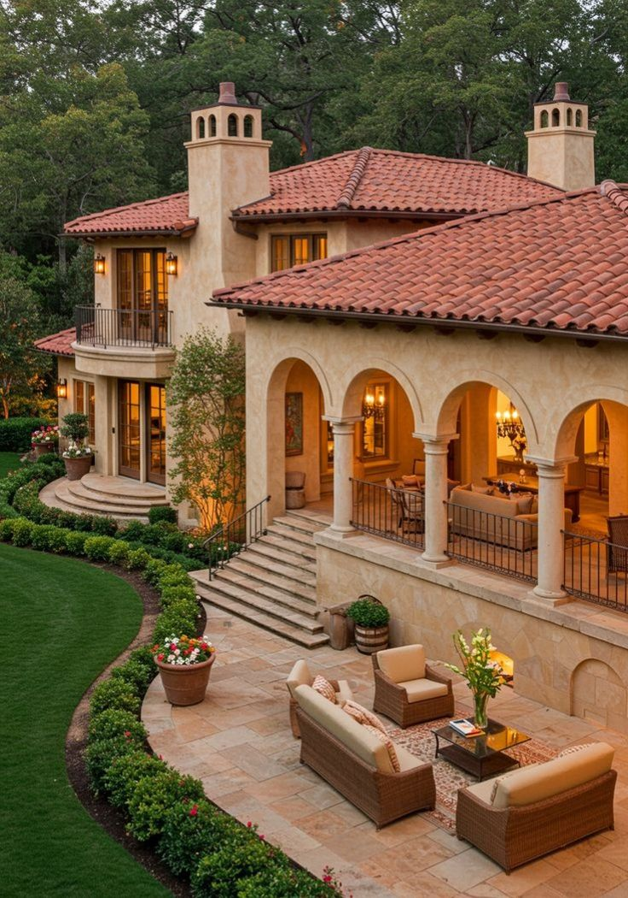
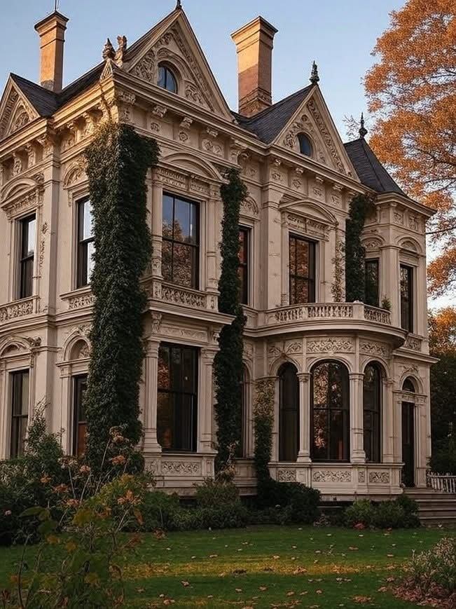

Victorian houses are known for their ornate decorations, steep roofs, and classic elegance.
 | Feature | Description |
|---|---|
| Roof Style | Steep, multi-gabled |
| Windows | Tall and narrow with decorative framing |
| Exterior | Ornate trims, woodwork, bright detailing |
| Structure | Two or three stories |
Victorian houses remain popular because of their charm and historical significance. Many homeowners love the artistic designs and warm character that modern homes sometimes lack.